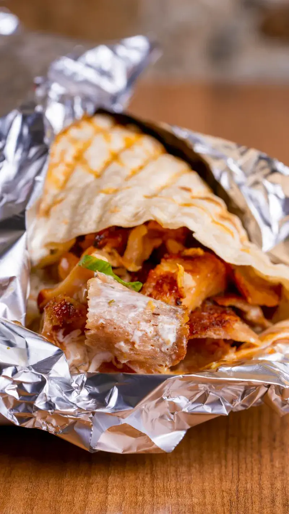
Vers bereid, elke keer
Alles wordt vers voor je bereid. Gasten noemen het schoon, vers en vol van smaak.
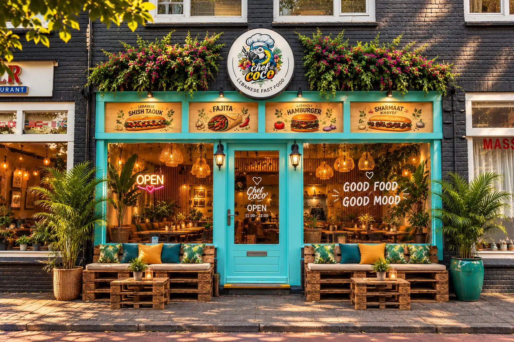
Libanees in Hilversum
Waarom Chef Coco

Alles wordt vers voor je bereid. Gasten noemen het schoon, vers en vol van smaak.
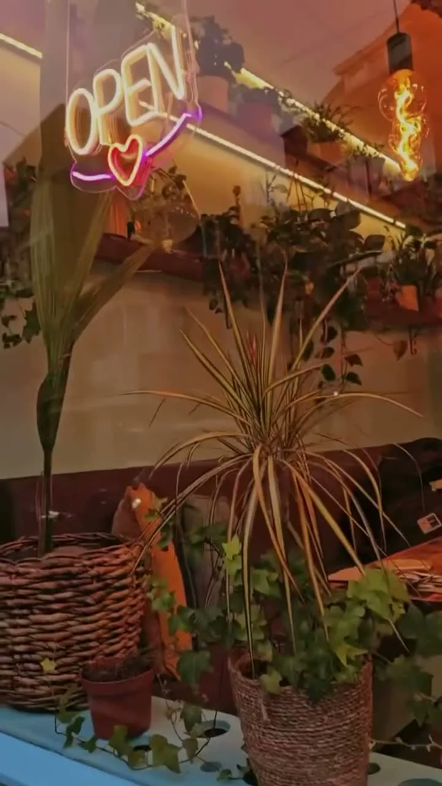
Rijke Libanese kruiden in broodjes, fajita's en burgers. Laagdrempelig, maar anders dan je gewend bent.
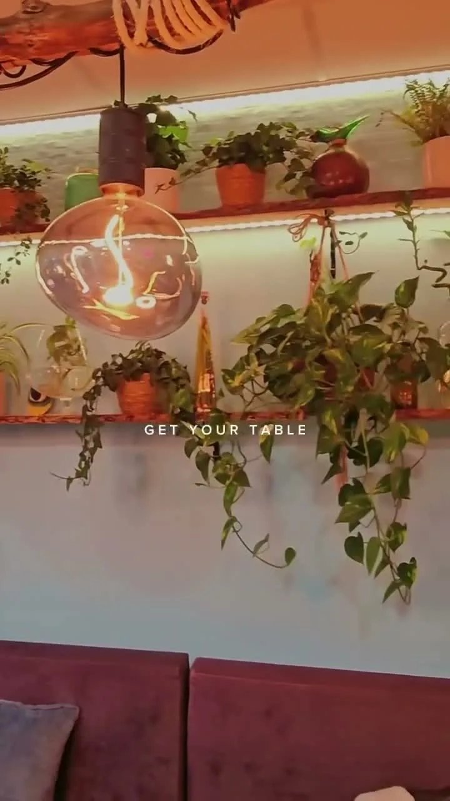
Planten, warme lampen en zachte banken. Hier eet je niet snel even, hier ga je zitten.
Op de kaart
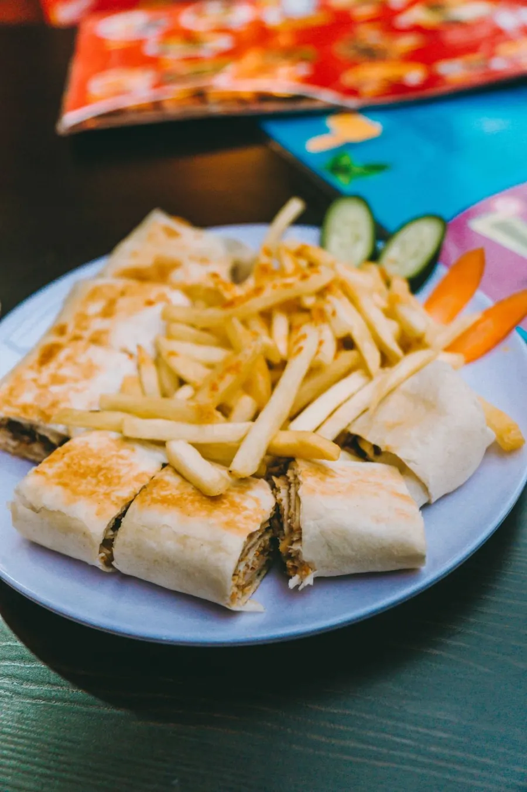
BroodjesMet rundvlees en gegrilde paprika, ui en champignons.
Favoriet bij gasten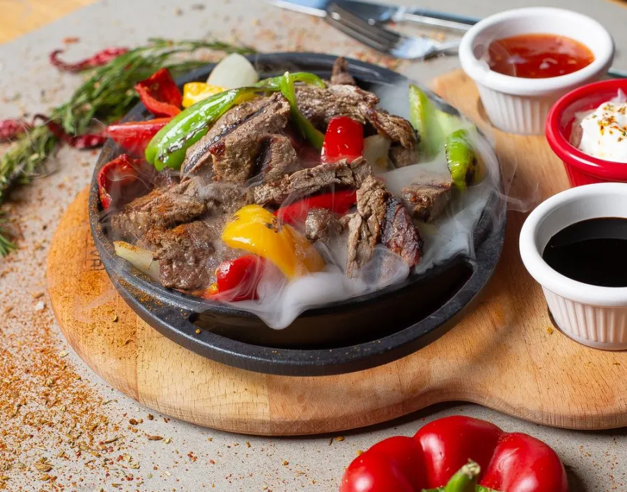
FajitaRundvlees met paprika en ui, met een portie friet erbij.
"Vol van smaak"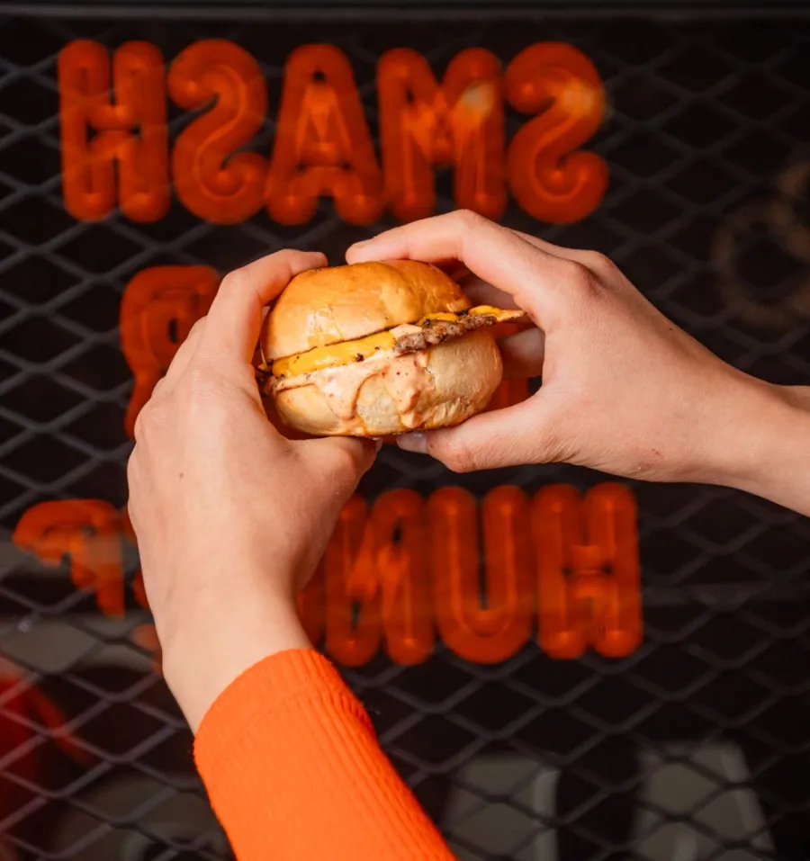
BurgersVers bereid, net als de rest van de kaart. Gasten zeggen: zeker proberen.
Het proberen waard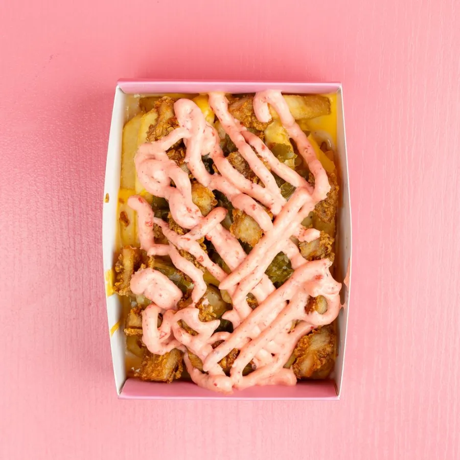
ErbijBij je broodje of om te delen, met dipsaus aan tafel.
Om te delenDe volledige kaart met prijzen staat hier binnenkort. Tot die tijd: kom langs en laat je verrassen.
Binnenkijken
De zoon bouwde het interieur zelf, voor zijn moeder. Dat zie je aan elk detail, van de planten tot de zachte banken.
En de papegaai?Die denkt nog steeds dat híj de chef is. Gelukkig kookt hij niet.
Gasten aan het woord
Lieve mensen die heerlijke broodjes maken. De zoon heeft het interieur zelf voor zijn moeder gebouwd. De gegrilde paprika, ui en champignons maken de broodjes extra smaakvol.
Het eten was zo lekker dat alles op was voordat we foto's konden maken. Mari en Elias zorgden voor een fijne ervaring.
Wauw! Vers, smaakvol en anders dan wat we gewend zijn. De kans is groot dat je hier vaker wilt komen.
De beef fajita met friet was vol van smaak. Prachtig, schoon interieur met veel planten. Ik kom zeker terug!
Nog nooit zo lekker gegeten! Alles schoon en vers bereid, in een prachtige zaak.
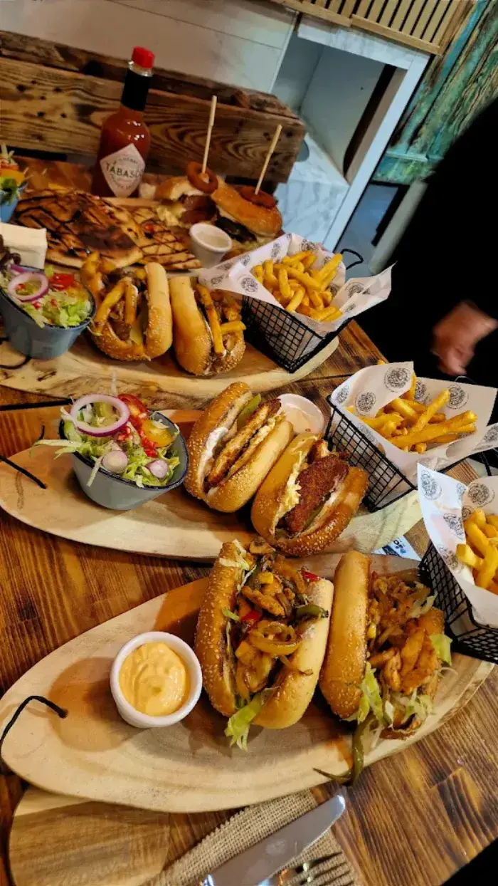
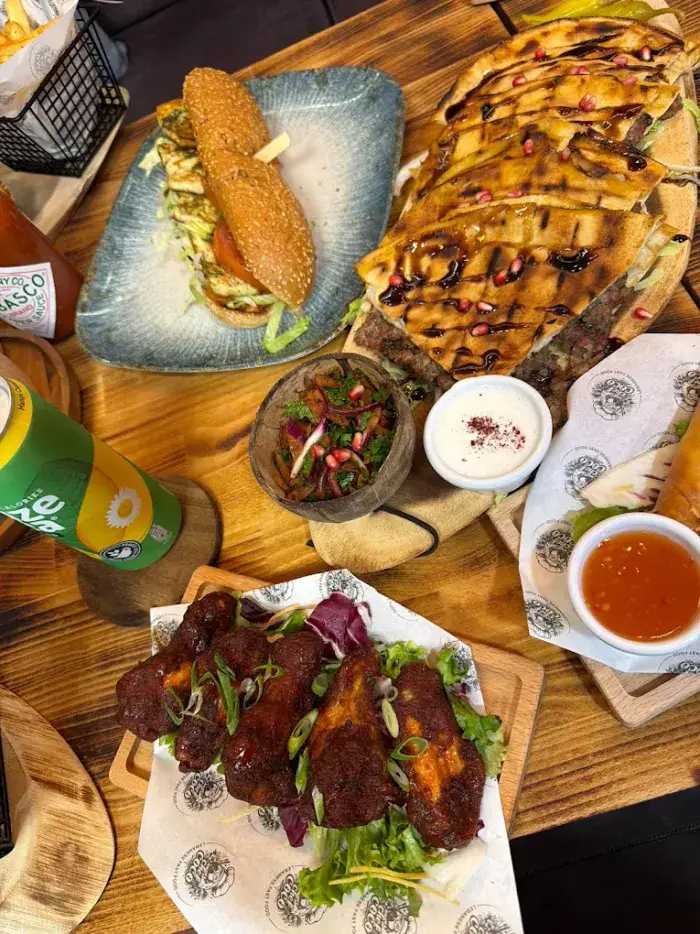
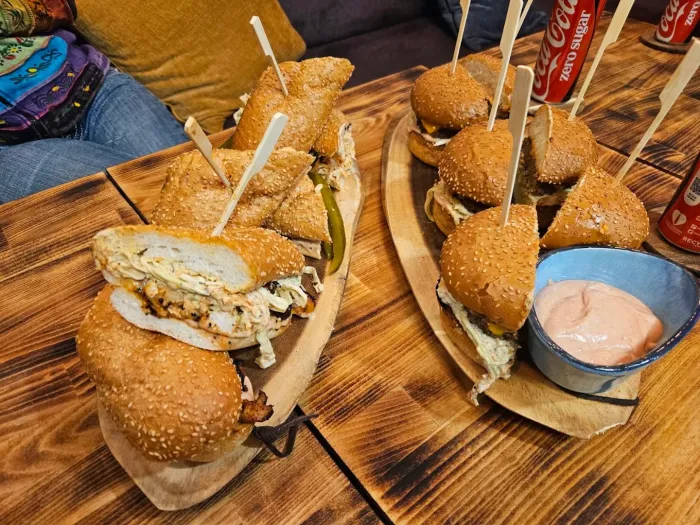
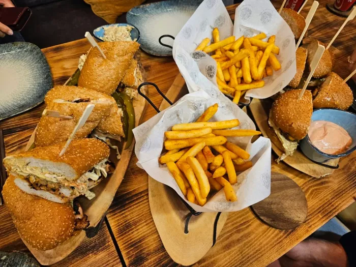
Langskomen
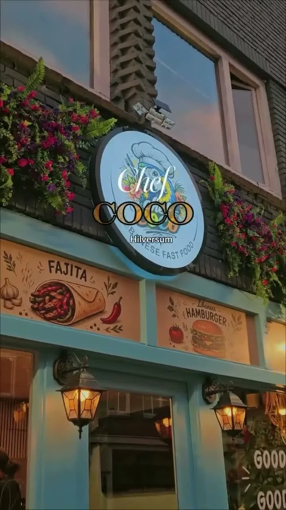
Kom proeven aan de Havenstraat, tussen de planten en het neon.